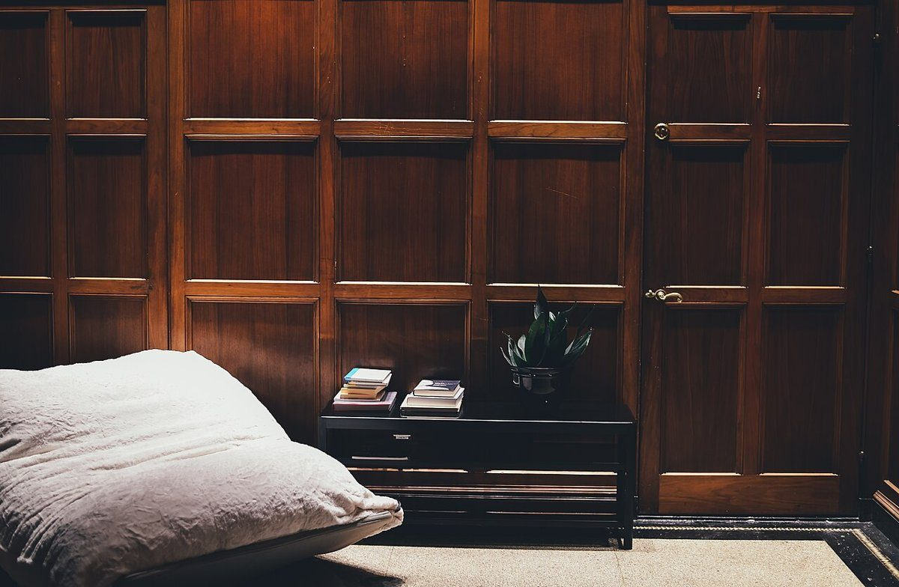
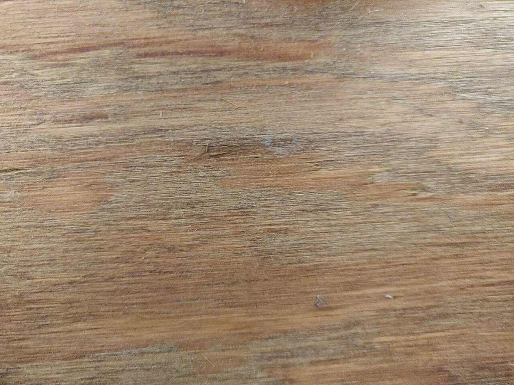
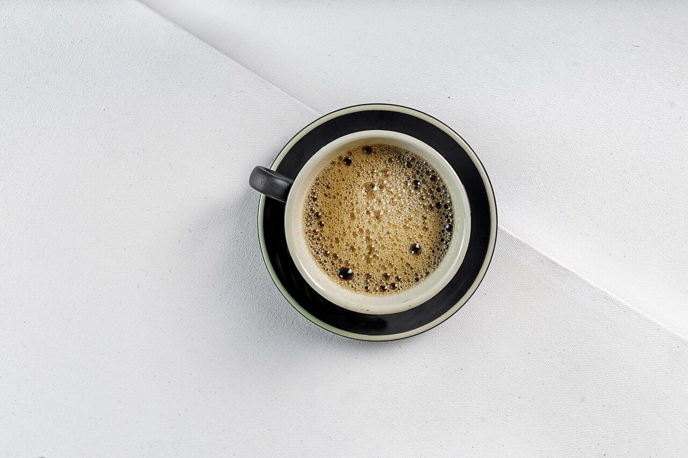

ご案内
| 営業時間 | 準備中(お問い合わせください) |
|---|---|
| 定休日 | 準備中(お問い合わせください) |
| 料金 | 準備中(お問い合わせください) |
詳しい情報は、お電話またはInstagramでお問い合わせください。

このサイトについて
このページは、カフェ杢いちの営業用に作成した試作サイト(サンプル)です。お店の詳しい情報は、確認でき次第掲載します。お急ぎの方は、お電話かInstagramでお問い合わせください。


| 営業時間 | 準備中(お問い合わせください) |
|---|---|
| 定休日 | 準備中(お問い合わせください) |
| 料金 | 準備中(お問い合わせください) |
詳しい情報は、お電話またはInstagramでお問い合わせください。

このページは、カフェ杢いちの営業用に作成した試作サイト(サンプル)です。お店の詳しい情報は、確認でき次第掲載します。お急ぎの方は、お電話かInstagramでお問い合わせください。


掲載写真はフリー素材のイメージです。店舗の実際の様子ではありません。他地域で撮影されたものや、撮影地が不明なものを含みます。
電話する 0297-21-3233